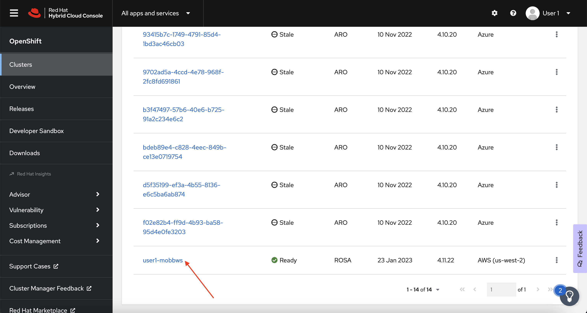
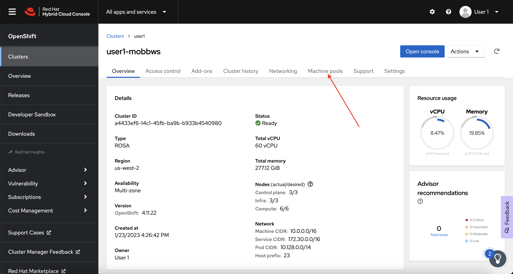
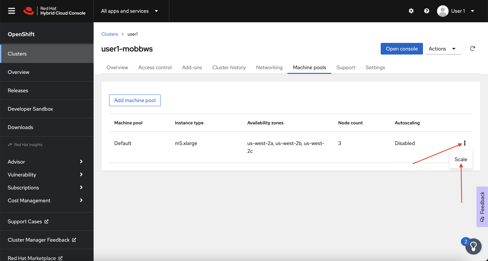
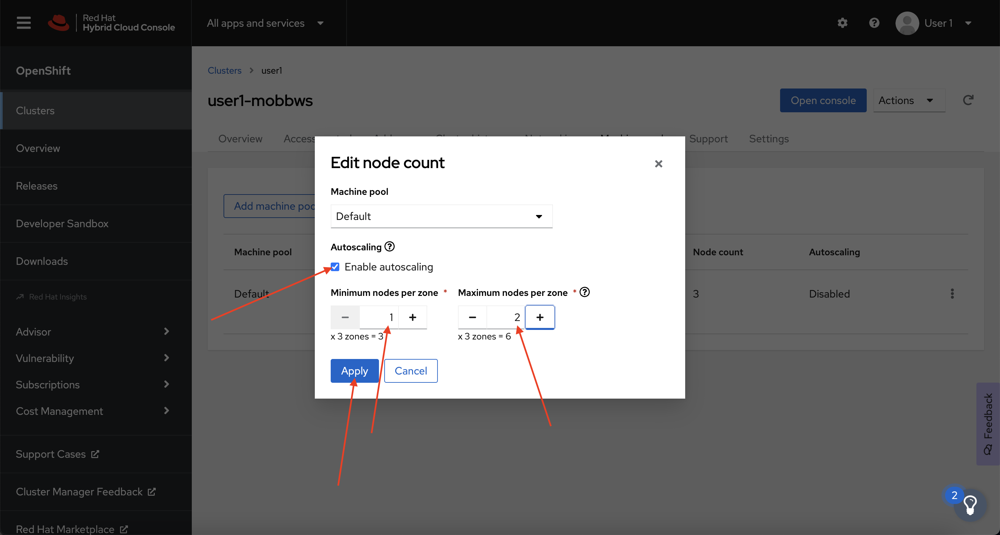

Cluster Autoscaling
Introduction#
The cluster autoscaler adjusts the size of an ROSA cluster to meet the resource needs of the cluster. The cluster autoscaler increases the size of the cluster when there are pods that fail to schedule on any of the current worker nodes due to insufficient resources or when another node is necessary to meet deployment needs. The cluster autoscaler does not increase the cluster resources beyond the limits that you specify. To learn more about cluster autoscaling, visit the Red Hat documentation for cluster autoscaling.
Enable Autoscaling on the Default MachinePool#
Note
It is important to note, that even though we are enabling autoscaling via the OpenShift Cluster Manager, this can also be done via the ROSA CLI.
-
Log back into the OpenShift Cluster Manager by clicking here. If you need to reauthenticate, use the credentials provided by the workshop team.
-
In the Cluster section, locate your cluster and click on it.

-
Next, click on the Machine pools tab.

-
Next, click on the ⋮ icon beside the Default machine pool, and select Scale.

-
Finally, check the Enable autoscaling checkbox, and set the minimum to
1and maximum to2, then click Apply.
-
Next, let's check to see that our managed machine autoscalers have been created. To do so, run the following command:
You should see output similar to:
NAME REF KIND REF NAME MIN MAX AGE user1-mobbws-6sj5f-worker-us-east-1a MachineSet user1-mobbws-6sj5f-worker-us-east-1a 1 2 18s user1-mobbws-6sj5f-worker-us-east-1b MachineSet user1-mobbws-6sj5f-worker-us-east-1b 1 2 18s user1-mobbws-6sj5f-worker-us-east-1c MachineSet user1-mobbws-6sj5f-worker-us-east-1c 1 2 18s -
And finally, let's check to see that our cluster autoscaler has been created. To do so, run the following command:
You should see output similar to:
Test the Cluster Autoscaler#
Now let's test the cluster autoscaler and see it in action. To do so, we'll deploy a job with a load that this cluster cannot handle. This should force the cluster to scale to handle the load.
-
First, let's create a namespace (also known as a project in OpenShift). To do so, run the following command:
-
Next, let's deploy our job that will exhaust the cluster's resources and cause it to scale more worker nodes. To do so, run the following command:
cat << EOF | oc create -f - apiVersion: batch/v1 kind: Job metadata: generateName: maxscale namespace: autoscale-ex spec: template: spec: containers: - name: work image: busybox command: ["sleep", "300"] resources: requests: memory: 500Mi cpu: 500m securityContext: allowPrivilegeEscalation: false capabilities: drop: - ALL restartPolicy: Never backoffLimit: 4 completions: 50 parallelism: 50 EOF -
After a few seconds, run the following to see what pods have been created.
Your output will look something like this:
NAME READY STATUS RESTARTS AGE maxscale-2bdjf 0/1 Pending 0 2s maxscale-2tvd6 0/1 Pending 0 2s maxscale-48rt7 0/1 Pending 0 2s maxscale-4nmch 0/1 Pending 0 2s maxscale-4zpnf 0/1 Pending 0 2s [...]Notice that we see a lot of pods in a pending state. This should trigger the cluster autoscaler to create more machines using the MachineAutoscaler we created.
-
Let's check to see if our MachineSet automatically scaled. To do so, run the following command:
You should see output similar to:
NAME DESIRED CURRENT READY AVAILABLE AGE user1-mobbws-6sj5f-infra-us-east-1a 1 1 1 1 20h user1-mobbws-6sj5f-infra-us-east-1b 1 1 1 1 20h user1-mobbws-6sj5f-infra-us-east-1c 1 1 1 1 20h user1-mobbws-6sj5f-worker-us-east-1a 2 2 1 1 20h user1-mobbws-6sj5f-worker-us-east-1b 2 2 1 1 20h user1-mobbws-6sj5f-worker-us-east-1c 2 2 1 1 20hThis shows that the cluster autoscaler is working on scaling multiple MachineSets up to 2.
-
Now let's watch the cluster autoscaler create and delete machines as necessary. To do so, run the following command:
watch oc -n openshift-machine-api get machines \ -l machine.openshift.io/cluster-api-machine-role=workerYour output will look like this:
Every 2.0s: ip-10-0-3-193.us-east-1.compute.internal: Tue Jan 24 21:32:18 2023 NAME PHASE TYPE REGION ZONE AGE user1-mobbws-6sj5f-worker-us-east-1a-frzrq Provisioned m5.xlarge us-east-1 us-east-1a 2m54s user1-mobbws-6sj5f-worker-us-east-1a-jrxnz Running m5.xlarge us-east-1 us-east-1a 20h user1-mobbws-6sj5f-worker-us-east-1b-274j7 Provisioned m5.xlarge us-east-1 us-east-1b 2m55s user1-mobbws-6sj5f-worker-us-east-1b-2j8lc Running m5.xlarge us-east-1 us-east-1b 20h user1-mobbws-6sj5f-worker-us-east-1c-4vswp Provisioned m5.xlarge us-east-1 us-east-1c 2m54s user1-mobbws-6sj5f-worker-us-east-1c-w8jl6 Running m5.xlarge us-east-1 us-east-1c 20hInfo
Watch will refresh the output of a command every second. Hit CTRL and c on your keyboard to exit the watch command when you're ready to move on to the next part of the workshop.
Congratulations! You've successfully demonstrated cluster autoscaling.